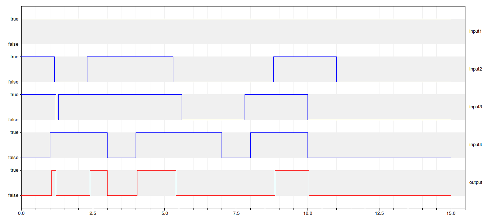
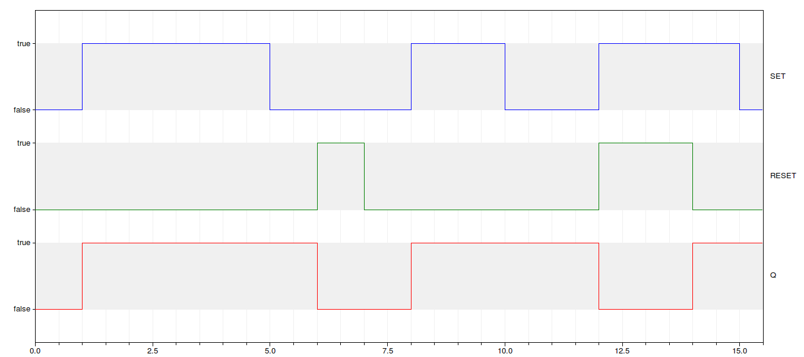

| Name | Description |
|---|---|
| generic logic operations | |
| Flip Flop test |
 IndustrialControlSystems.Logical.LogicalOperations.Examples.basicLogicOperations
IndustrialControlSystems.Logical.LogicalOperations.Examples.basicLogicOperations
In this examples are tested the basic logic operations.
Depending on the value of the sampling time Ts the behaviour of the logic blocks may vary.
In the following figure the output of two different NOT operators are compared. The blue line is the input signal while the green one is the output
of a NOT with Ts = 0.15 and the red one the output of a NOT with Ts = 0 (thus continuous time).

To note that the red line is exactly the NOT of the input, while the green one is approximately the NOT of the input. This is due to the time discretisation.
This is the output of the AND operation, where the blue lines are the four inputs while the red one is the output

Even in this case small delays are introduced by the time discretisation.
Extends from Modelica.Icons.Example (Icon for runnable examples).
| Name | Description |
|---|---|
| Ts | Sampling time of each logical block |
IndustrialControlSystems.Logical.LogicalOperations.Examples.FliFlop
In this examples is tested the Set reset Flip Flop.
In this case Ts = 0.1 and the initial value of the FF is Q = false.
When a rising edge of the SET signal is detected, the output Q becomes true while a rising edge of the RESET signal is detected the output Q becomes false.

Extends from Modelica.Icons.Example (Icon for runnable examples).
Automatically generated Mon May 21 13:34:13 2012.